채널: 레디포그로스 (Ready For Growth) | 길이: 13:00 | 날짜: 2026-02-21
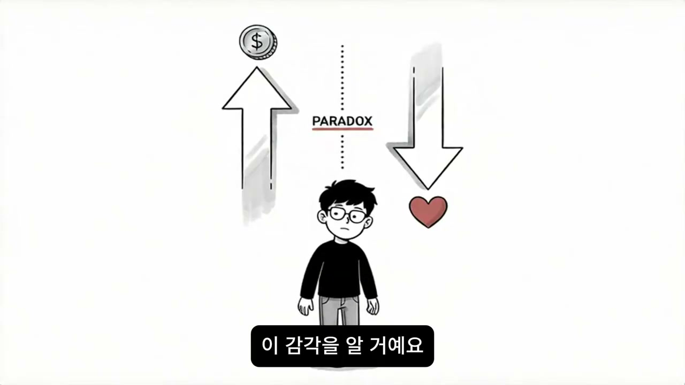
월급이 들어온 날인데도 기분이 좋아지지 않고 가슴이 무거워지는 역설을 제시합니다. 화자는 이를 INFP 시청자에게 특히 익숙한 감각으로 호출하며, “돈이 들어왔는데 가라앉는 모순”을 뇌과학으로 풀겠다고 선언합니다. 스크린샷은 PARADOX 텍스트와 함께 위로 향하는 돈 화살표와 아래로 향하는 하트 화살표를 배치해, 수입 증가와 감정 하강의 역방향 구조를 직관적으로 보여줍니다.
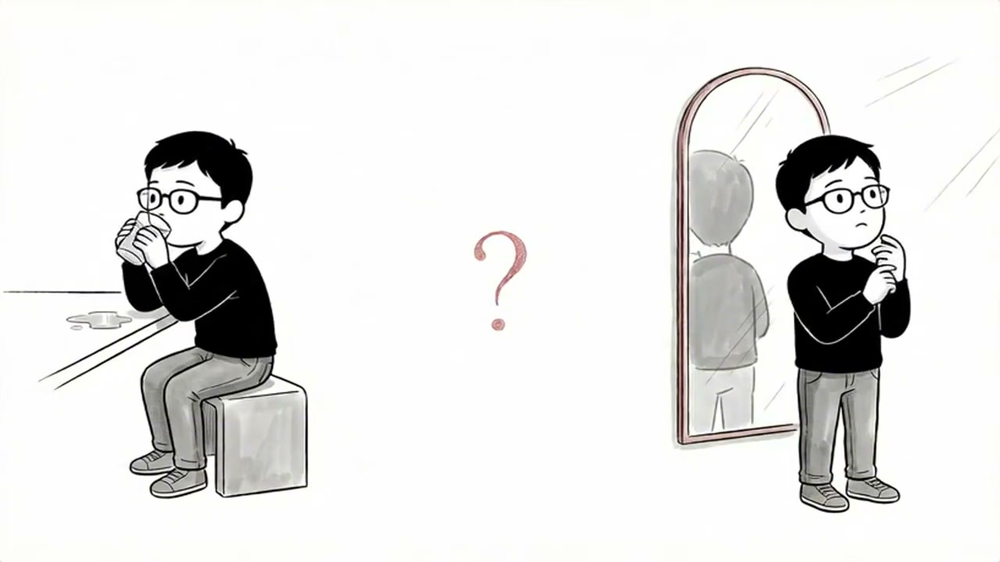
친구들과 식사 중 연봉/재테크/수익률 화제가 나오면 입이 닫히고 화제 전환만 기다리는 행동을 묘사합니다. 가계부 앱을 깔아도 3일 만에 지우는 이유를 “숫자를 들여다보는 행위 자체가 에너지를 빼앗기 때문”이라고 말합니다. 시각적으로는 NO INTEREST, UNREALISTIC가 붉은 취소선과 X로 지워져, ‘관심 없음/비현실적’이라는 통념적 낙인을 반박하는 방향을 미리 제시합니다.
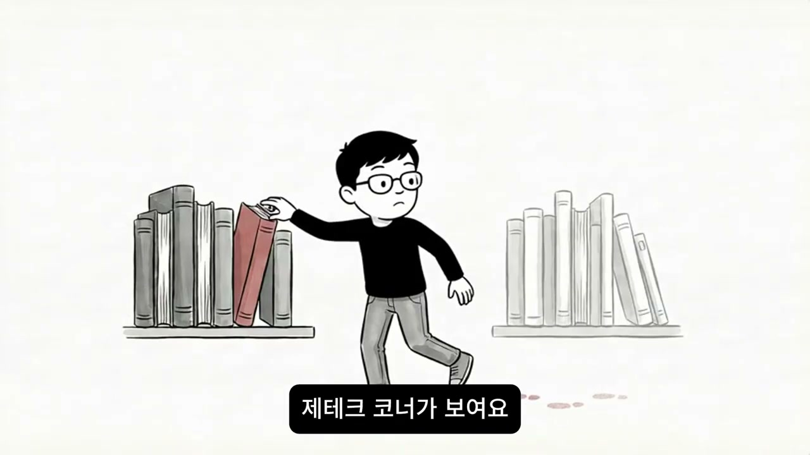
돈에 관심이 없는 게 아니라, 관심을 돌리려는 순간 저항이 생긴다는 내적 체감을 구체화합니다. 서점에서 에세이 코너로는 자연스럽게 가지만 재테크 코너 앞에서는 멈추고, 집어 들었다가 다시 내려놓는 패턴을 말합니다. 화면은 카페에서 위축된 모습과 거울 앞 자기 인식을 물음표로 연결해, 행동과 자아해석 사이 간극을 강조합니다.
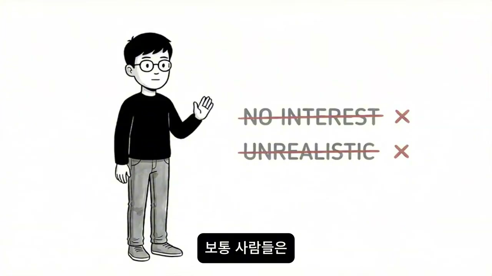
“돈을 중요하게 생각하면 잘못한 것 같고, 무시하면 현실이 불안한” 이중구속 상태를 설명합니다. 반복의 원인을 ‘당신 탓’이 아니라 ‘뇌 안의 충돌’로 재정의하는 구간입니다. 스크린샷의 머리 실루엣 안 MEANING(별)과 돈 아이콘, 경고표시는 “의미 중심 처리체계와 돈 자극의 긴장”을 도식화합니다.
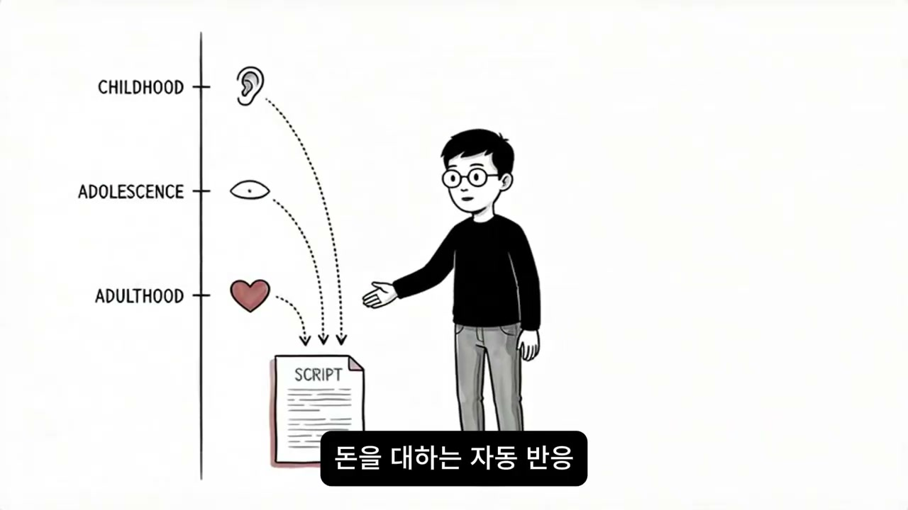
심리학의 무의식적 각본 개념을 도입해, 돈을 대하는 자동 반응은 축적된 경험의 결과라고 설명합니다. 친구의 연봉 대화에서 말문이 막힌 장면을 각본 발동 사례로 재해석합니다. 화면의 서가 장면은 돈 관련 책 앞에서의 미세한 회피를 행동 단위로 보여줍니다.
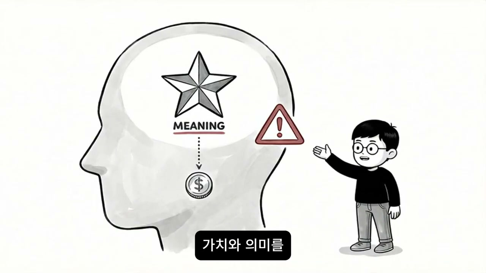
“돈을 밝히면 속물” 같은 문장이 명시적 교육 없이도 자연 입력될 수 있다고 말합니다. 의미 우선형 뇌는 효율보다 “의미 있는가?”를 먼저 묻기에, 돈이 의미의 반대편에 놓이면 자동 제동이 걸린다는 논리입니다. 시각적으로 CHILDHOOD–ADOLESCENCE–ADULTHOOD 축에서 감각 아이콘(귀/눈/하트)이 SCRIPT 문서로 모여 각본 형성의 생애 누적을 표현합니다.
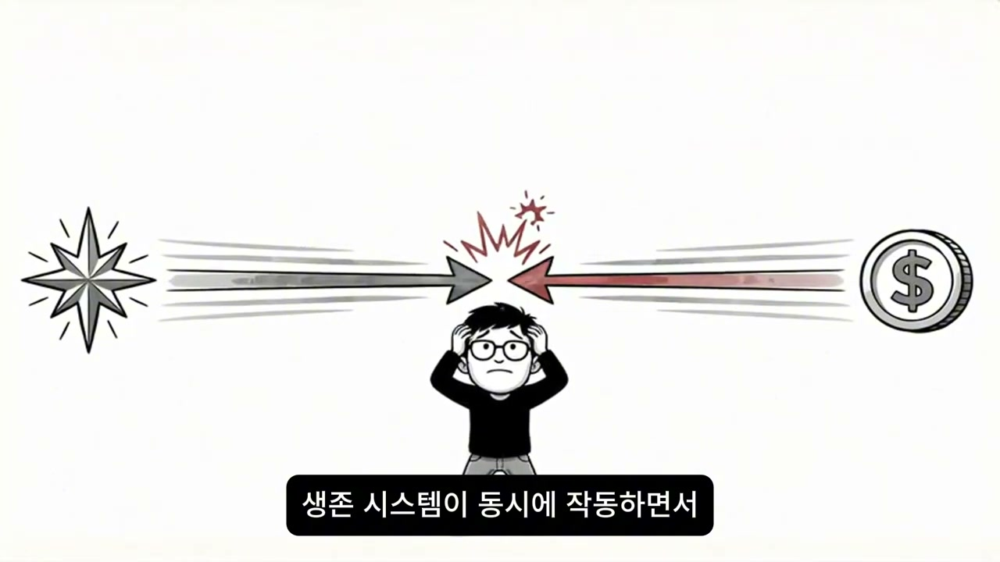
돈 생각 순간 뇌가 브레이크를 거는 현상은 귀찮음이 아니라 시스템 충돌이라고 규정됩니다. 한쪽은 “의미 있는 일”, 다른 쪽은 “현실적 돈 필요”를 요구하고, 충돌 시 판단이 정지된다고 설명합니다. 화면의 AUTO-TAG 폴더·경보·돈 아이콘은 돈 자극이 기존 감정 태그를 자동 호출하는 메커니즘을 상징합니다.
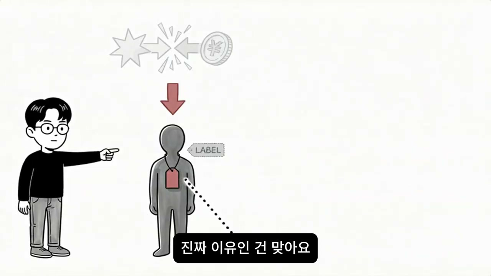
진짜 문제는 충돌 자체보다, 그 충돌을 모른 채 자신을 “현실감각 없는 사람”으로 정의해버리는 2차 해석이라고 강조합니다. 이 자기정의가 돈과의 거리를 더 벌리는 악순환을 만든다고 말합니다. 스크린샷의 좌우 충돌 화살표와 중앙 인물은 과부하 상태를, 이전 통념을 취소한 시각 구조는 낙인 해체를 보여줍니다.
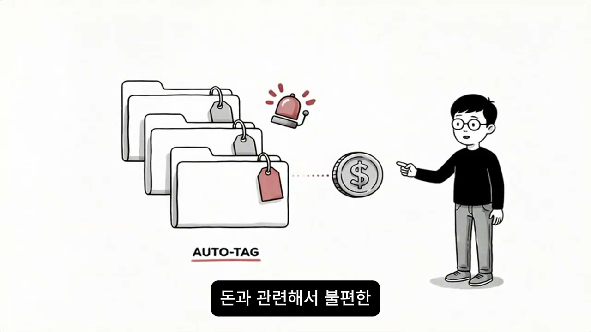
편도체를 경보 시스템으로 설명하며, 과거 돈 관련 불편 경험이 태그처럼 저장된다고 말합니다. 이후 유사 상황에서 태그가 자동 활성화되어 현재 반응을 선점한다는 주장입니다. 화면의 WEAK 사고풍선과 움츠린 자세는 자동 활성화 후 자기비난으로 미끄러지는 과정을 시각화합니다.
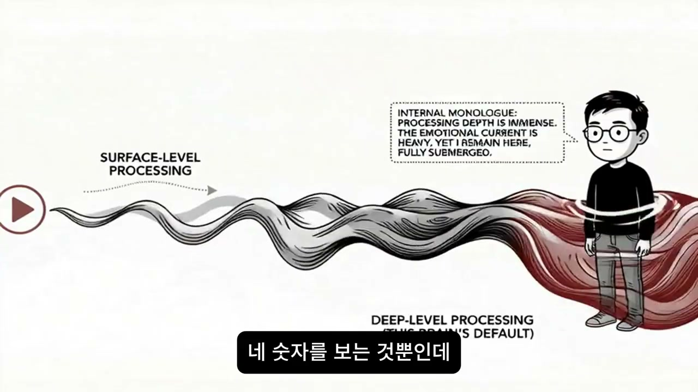
중립적 행위(잔고 확인)인데도 가슴이 무거운 이유는 “지금 감정”이 아니라 “과거 저장 감정의 재생” 때문이라고 설명합니다. 즉 맥락은 빠지고 감정만 호출되는 자동화 오류가 핵심입니다. 스크린샷의 LABEL 태그가 붙은 인물은 경험-라벨-반응의 자동 경로를 명확히 드러냅니다.
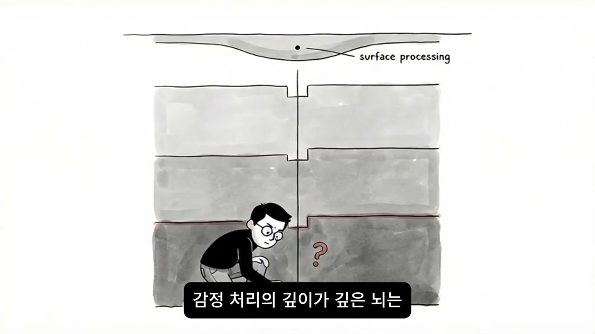
다른 사람은 ‘좀 불편함’에서 끝나지만, 화자가 상정한 청자 유형은 불편을 가치관/자아문제로 확장해 깊게 판다고 설명합니다. 이를 일상 비유로 “자동 저장 기능에 버그가 있는 상태”라고 표현합니다. 화면의 surface processing 단면과 깊은 층에서의 탐색 이미지는 표층·심층 처리 차이를 도식화합니다.
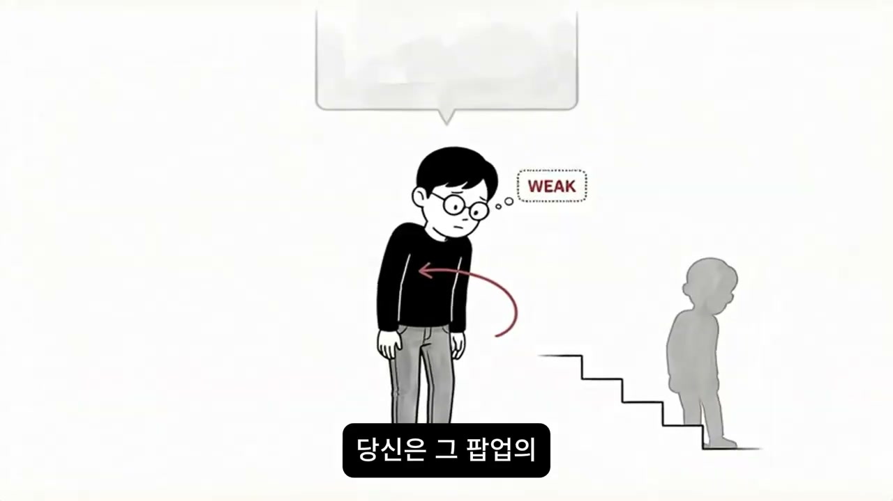
버그의 본질은 “감정만 저장, 맥락 삭제”이며, 돈 키워드 입력 시 팝업처럼 불편만 뜬다고 정리합니다. 이유를 모르면 자기원인화가 일어나 “나는 돈에 약하다”는 결론으로 내려간다고 지적합니다. 스크린샷의 SURFACE-LEVEL PROCESSING 대비 DEEP-LEVEL PROCESSING과 내부독백 텍스트는 정서과부하를 구조적으로 설명합니다.
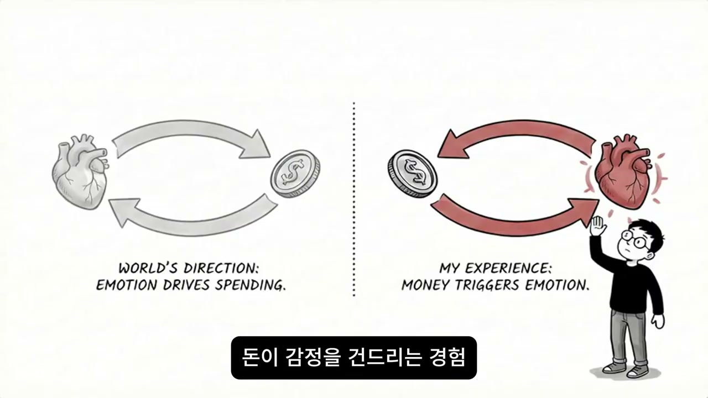
세상이 “감정으로 돈을 쓰는” 방향이라면, 당신은 “돈이 감정을 건드리는” 반대 경험을 한다는 반전을 제시합니다. 여기서 핵심은 감각 둔함이 아니라 오히려 정밀함이라는 재해석입니다. 화면 좌우 비교(WORLD’S DIRECTION vs MY EXPERIENCE)가 메시지의 대비를 명료하게 만듭니다.
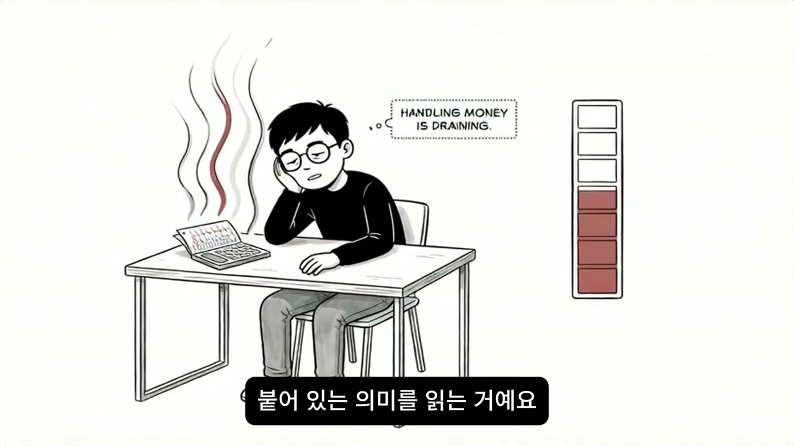
대부분이 돈을 숫자로 처리할 때, 이 유형의 뇌는 숫자에 붙은 의미를 읽기 때문에 피로가 커진다고 설명합니다. 그래서 돈 다루기 자체가 감정노동이 된다고 말합니다. 스크린샷의 지친 인물, HANDLING MONEY IS DRAINING, 낮은 배터리 막대는 정서 소모를 직관적으로 전달합니다.
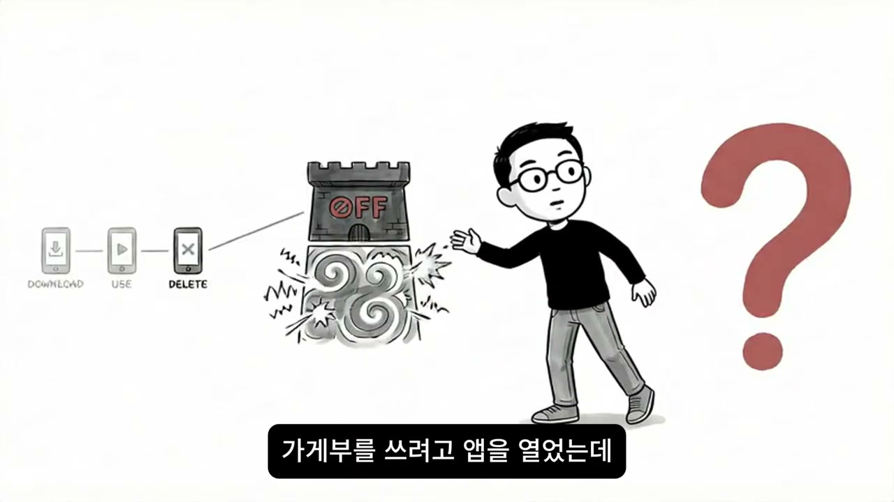
전전두엽(판단/선택)의 사령탑이 작동하려면 감정 시스템 안정이 선행되어야 한다고 설명합니다. 돈 자극이 먼저 요동을 만들면 사령탑 전원이 꺼져 숫자 처리가 시작조차 안 된다는 결론입니다. 화면의 순환고리(반복 패턴)와 “다시 같은 원” 암시는 왜 의지만으로 반복을 끊기 어려운지 보여줍니다.
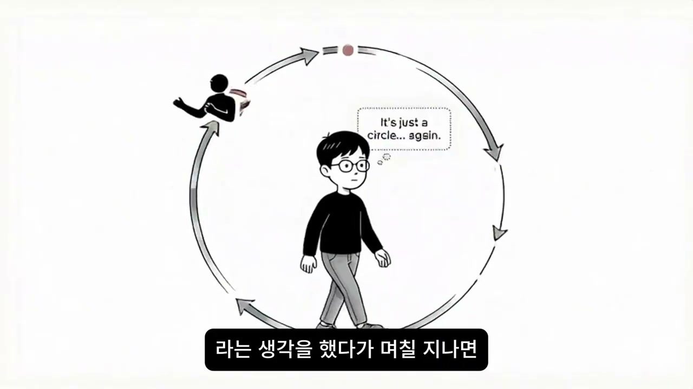
돈 고민은 했지만 실질 변화는 없었던 이유를 “생각으로는 감정 태그를 지울 수 없기 때문”이라 설명합니다. 자동 저장 버그는 사고가 아니라 경험으로만 업데이트된다는 점이 핵심 전환입니다. 스크린샷의 download-use-delete 후 OFF 상태로 전환되는 사령탑 은유가 ‘3일 가계부 삭제’의 구조적 원인을 압축합니다.
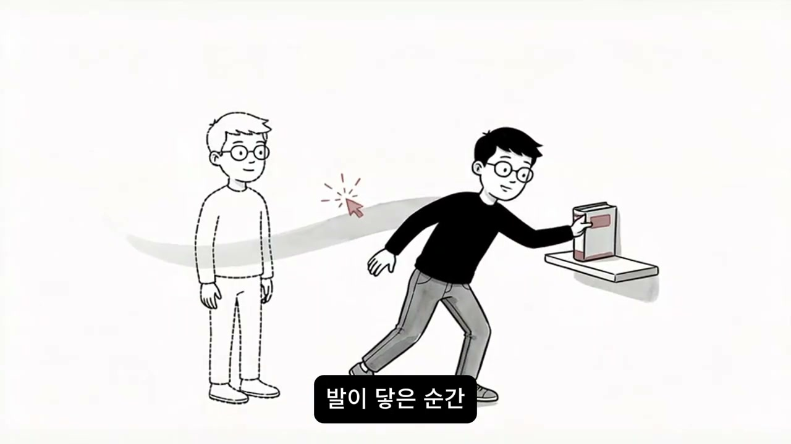
일상에서 행동이 먼저 나오고 의미는 나중에 따라오는 사례를 소환합니다. 갑작스러운 선택이 나중에 “맞았다”로 해석되는 경험이 이를 뒷받침합니다. 화면은 실루엣과 실제 인물의 동작 선행을 대비해, 선행행동-후행해석 모델을 시각화합니다.
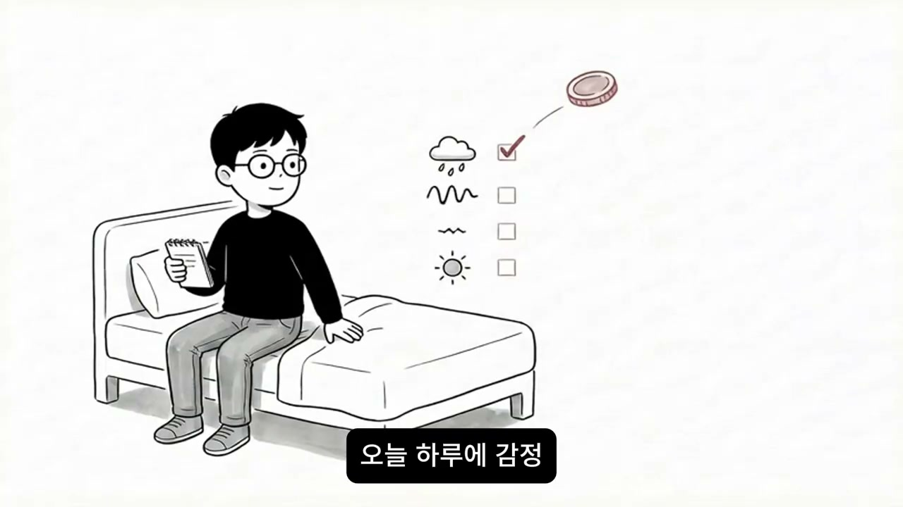
돈 관계에서도 동일하게 작은 행동이 먼저여야 생각이 따라 바뀐다고 제시합니다. 실험 과제는 아침에 일반 감정 날씨와 함께 “돈 감정 날씨”를 한 단어(흐림/불안/무관심/괜찮음 등)로 적는 것입니다. 침대 옆 메모와 날씨형 체크리스트 이미지는 개입 난이도를 매우 낮춘 ‘초미니 습관’ 설계를 강조합니다.
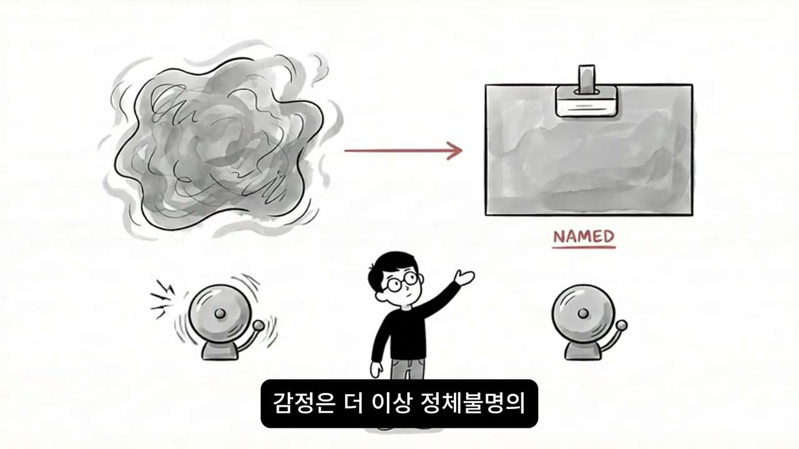
감정에 이름을 붙이면 편도체 경보 반응이 줄어들어, 돈 주제가 감정영역에서 인식영역으로 이동하기 시작한다고 설명합니다. 이어 하루 중 돈 관련 행동(커피/교통비/결제) 순간에 “한 줄”만 적으라고 제안합니다. 화면의 혼탁한 덩어리가 NAMED 폴더로 정리되고 경보가 잦아드는 도식은 명명 효과를 정확히 시각화합니다.
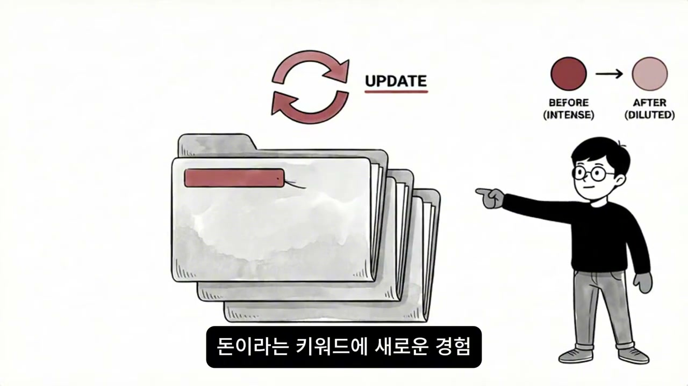
이 기록은 가계부가 아니라 감정일기이며, 숫자 기록이 아닌 감정 데이터 축적이라고 재정의합니다. 새 경험 데이터가 쌓이면 과거 감정태그가 희석되어 자동 저장 버그가 업데이트된다고 설명합니다. 화면 분기선에서 불쾌 경로 대신 중립 경로로 방향전환되는 그래픽이 ‘미세한 경로 수정’을 상징합니다.
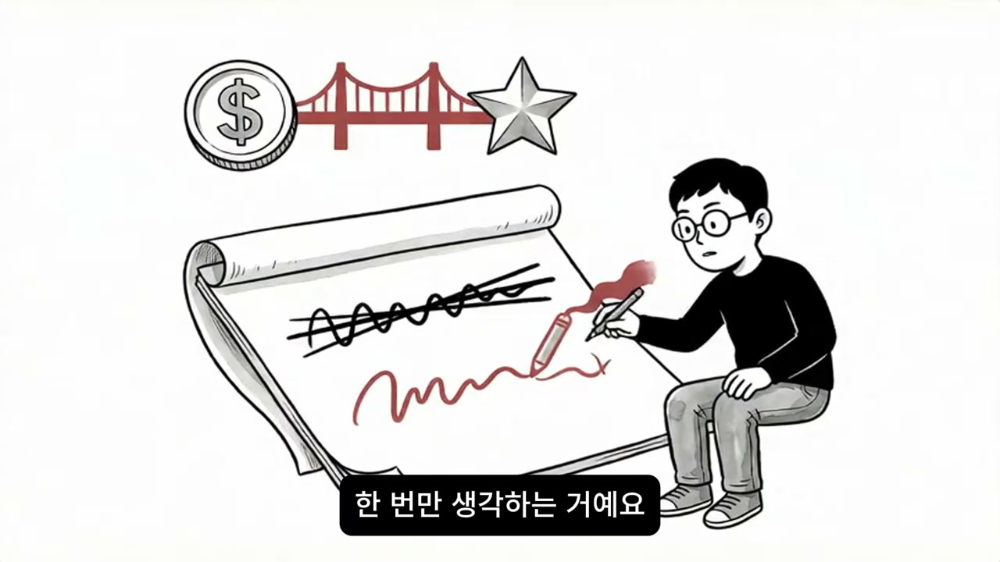
핵심 원인이 “돈=가치 반대” 각본이라면, 소비 순간 “이 지출이 내 가치와 어디서 연결되는가?”를 한 번만 묻으라고 제안합니다. 예시로 카페 커피는 단순 지출이 아니라 창작시간을 위한 투자로 재의미화됩니다. 스크린샷의 돈-다리-별 도식과 문장 재작성 장면은 가치 연결문장 쓰기의 핵심을 보여줍니다.
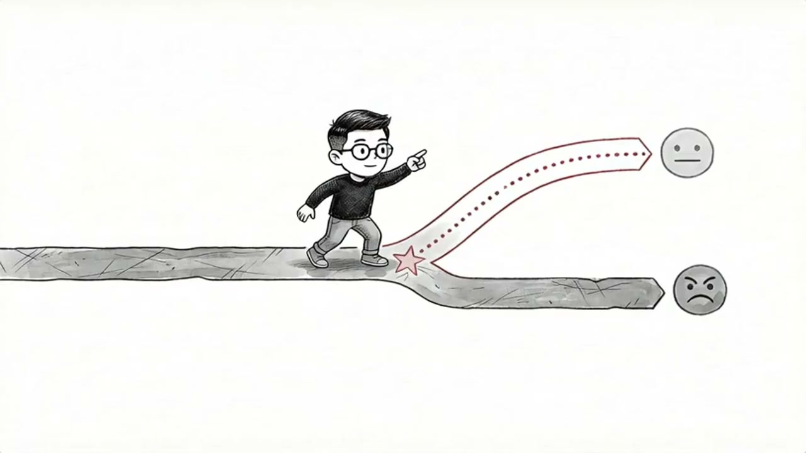
반복되면 “돈은 가치 반대”가 아니라 “가치를 실현하는 도구”라는 새 문장이 쓰이기 시작한다고 말합니다. 뇌는 반복경험으로 회로를 만들기에, 불편 경험만 있으면 불편 회로가 강화되고 작은 새 경험이 끼어들면 옆에 새 경로가 생깁니다. 화면의 UPDATE, BEFORE(INTENSE) → AFTER(DILUTED)는 태그 강도의 실제 약화를 도식으로 제시합니다.
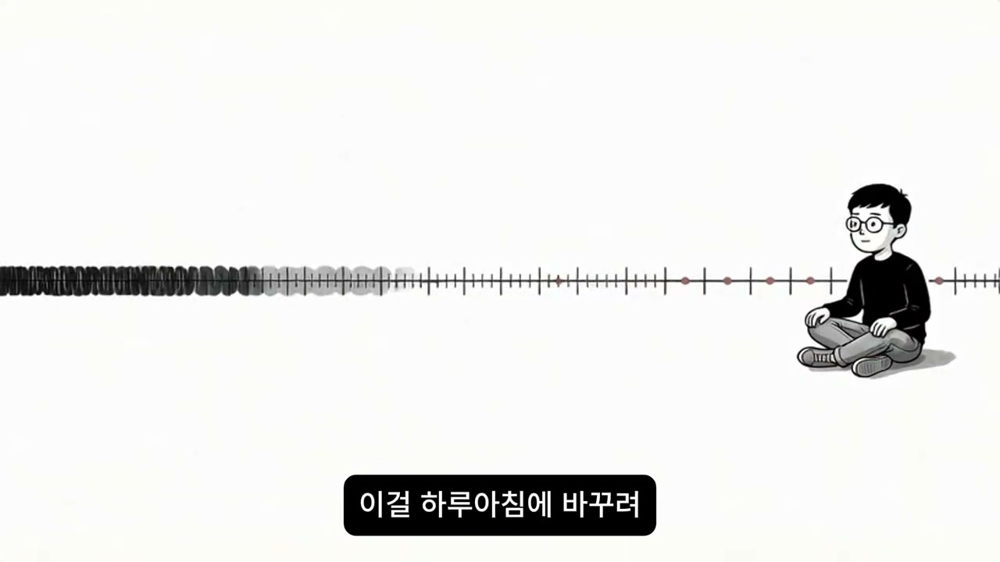
새 경로는 반복될수록 굵어지고, 어느 순간 기본 경로를 바꾼다는 신경가소성 논리를 제시합니다. 중요 포인트는 “하루아침에 바꾸려 하지 말 것”, 오래된 회로를 급히 뒤집으려 하면 저항이 커진다는 점입니다. 길게 뻗은 타임라인 시각화(초반 밀집·후반 완화)는 장기 누적 모델을 직관화합니다.
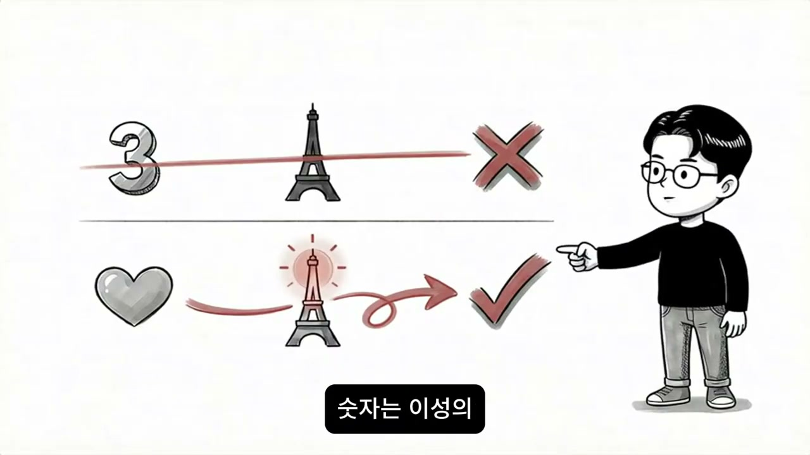
오늘 한 줄, 내일 한 줄의 감정기록만으로도 변화가 시작된다고 말합니다. 가계부 3일 실패는 숫자 영역(이성)부터 건드렸기 때문이며, 감정 시스템이 이미 사령탑 전원을 내린 상태에서 숫자 지시를 내려 실패한 것이라는 진단입니다. 스크린샷의 상단 숫자 직진(X) vs 하단 감정 경유(✓) 도식은 “감정 먼저, 숫자 나중” 순서 규칙을 명확히 보여줍니다.
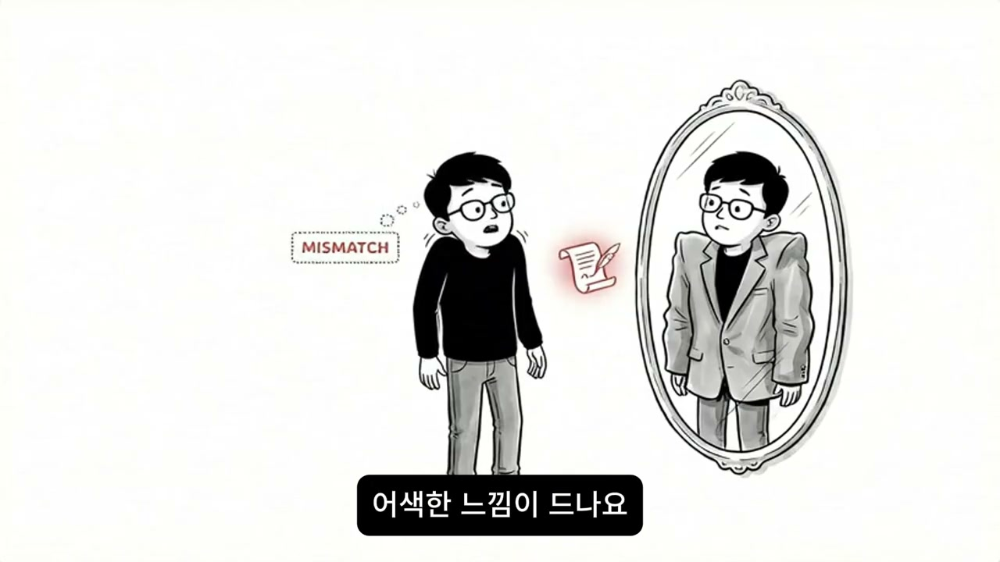
감정이 정리되면 사령탑이 켜지고 숫자가 보이기 시작한다는 연결을 다시 강조합니다. “돈을 진지하게 생각하는 나”를 상상할 때 어색하다면, 그 어색함 자체가 무의식 각본 신호라고 설명합니다. 스크린샷은 페이드 아웃에 가까운 미니멀 장면으로 전환되어, 개념적 전환점(메타 인식 구간)을 연출합니다.
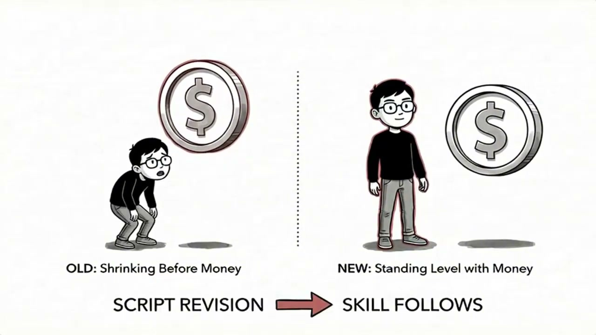
“나는 돈과 안 어울린다”는 문장은 타인이 준 규칙이 아니라 장기 경험이 자동 생성한 결론이므로, 새 경험 누적으로 바꿀 수 있다고 말합니다. 목표는 즉시 ‘돈 잘 다루는 사람’이 아니라 ‘돈 앞에서 움츠러들지 않는 사람’이며, 기술은 각본 수정 뒤에 따라온다고 정리합니다. 거울 속 격식 있는 자아와 현재 자아의 MISMATCH 이미지는 정체성 전환기의 어색함을 시각화합니다.
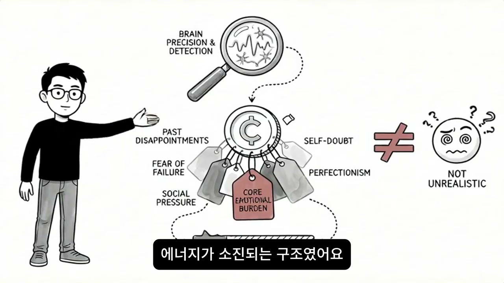
불편의 원인은 현실감각 부족이 아니라 돈을 감정으로 정밀 처리하는 뇌 특성이라고 최종 규정합니다. 과거 감정태그 과다 부착으로 돈 생각만 해도 에너지가 소진된 구조였고, 문제는 방법(순서)이었지 뇌 고장이 아니었다고 재확인합니다. 화면의 선 위를 걷는 인물은 새로운 인지 경로를 ‘직선화’하는 상태를 상징합니다.
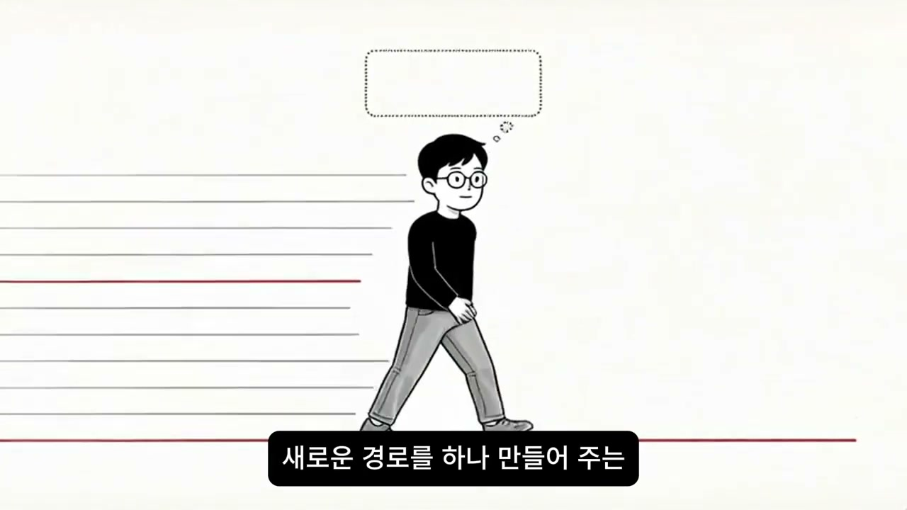
오늘 밤 잔고 확인 시 숫자보다 감정을 먼저 읽으라는 실천 문장으로 마무리합니다. “지금 이 숫자를 보며 드는 기분은 뭐지?”라는 한 줄이 돈-자아 사이 새 경로의 시작이며, 기록 누적이 각본을 다시 쓴다고 강조합니다. 화면의 OLD: Shrinking Before Money vs NEW: Standing Level with Money, SCRIPT REVISION → SKILL FOLLOWS 문구가 전체 메시지를 시각적으로 결론냅니다.
이 콘텐츠는 뇌과학·심리학 연구를 바탕으로 정리한 교양정보이며, 의학적 진단·치료를 대체하지 않는다는 면책 고지를 명확히 합니다. 스크린샷의 도식(BRAIN PRECISION & DETECTION, CORE EMOTIONAL BURDEN, NOT UNREALISTIC)은 마지막까지도 핵심 메시지인 “비현실적이라서가 아님”을 반복합니다.
“돈 얘기가 불편한 건 당신 탓이 아니에요. 이건 뇌 안에서 벌어지는 충돌이에요.”
“문제는 이 자동 저장이 감정만 저장한다는 거예요. 맥락은 빠지고 감정만 남아요.”
“지금 이 순간의 감정이 아니라 과거에 저장된 감정이 재생되고 있는 거예요.”
“당신의 뇌가 돈 앞에서 불편한 건 감각이 무딘 게 아니라 너무 정밀하기 때문이에요.”
“의지가 약한 게 아니라 감정 시스템이 사령탑의 전원을 꺼버린 거예요.”
“생각으로는 감정 태그를 지울 수 없어요. 뇌는 경험으로만 업데이트돼요.”
“행동이 먼저 일어나고 의미는 나중에 따라와요.”
“이건 가계부가 아니에요. 감정일기예요.”
“돈을 쓸 때 이 소비가 내 가치와 연결되는 지점이 뭔지 한 번만 생각하는 거예요.”
“돈은 가치의 반대가 아니라 가치를 실현하는 도구라는 새 문장이 쓰이기 시작해요.”
“숫자보다 감정을 먼저 기록해야 해요. 순서가 반대였던 거예요.”
“당신이 돈에 약한 게 아니에요. 방법이 맞지 않았을 뿐입니다.”
이 영상은 재무문제를 기술(예산·가계부·투자지식) 이전의 정서-인지 인터페이스 문제로 재배치합니다. 핵심은 “돈을 생각할 때 왜 멈추는가”를 의지 결함으로 보지 않고, 가치-생존 충돌, 편도체 자동태그, 맥락 소실형 감정 재생, 심층 정서처리 과부하라는 구조로 해석한 점입니다.
실용적 시사점은 명확합니다.
첫째, 숫자 관리 이전에 감정 명명(한 단어)과 결제 순간 한 줄 기록으로 경보강도를 낮춥니다.
둘째, 소비-가치 연결문장을 반복해 무의식 각본을 수정합니다.
셋째, 회로 변화는 누적형이므로 급격한 자기개조보다 저강도 반복이 효과적이라는 전략을 채택합니다.
향후 관점에서 보면, 이 접근은 재무행동 개입을 “지식 주입”에서 “신경회로 업데이트 설계”로 옮깁니다. 따라서 장기적으로는 돈 회피를 줄이고, 중립적 숫자 인식 능력을 회복하며, 그 이후에야 예산·투자·자산관리 기술이 안정적으로 붙는 순서를 제안하는 영상입니다.
댓글
GitHub 이슈 기반 댓글 시스템입니다.